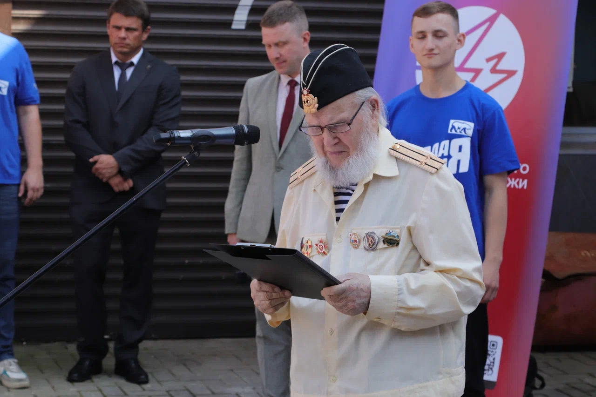
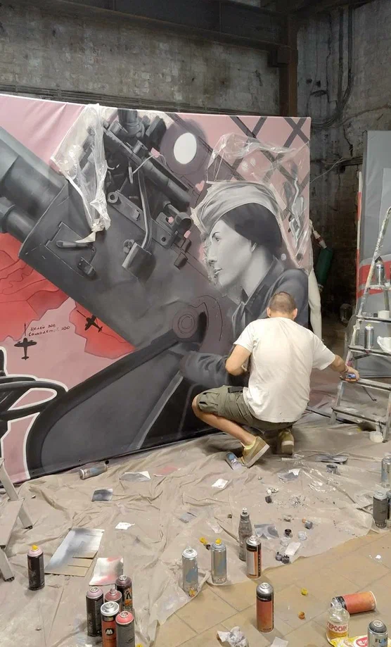

САНКТ-ПЕТЕРБУРГСКОЕ РЕГИОНАЛЬНОЕ ОТДЕЛЕНИЕ ВСЕРОССИЙСКОЙ ОБЩЕСТВЕННОЙ ОРГАНИЗАЦИИ «МОЛОДАЯ ГВАРДИЯ ЕДИНОЙ РОССИИ»
В 2024 году в России и в мире отмечалась 80-я годовщина прорыва блокады Ленинграда. С каждым годом ветеранов и жителей блокадного Ленинграда в стране и, в частности, в Санкт-Петербурге, становится все меньше. У молодого поколения с каждым годом становится все меньше возможностей узнать историю войны от ветеранов и блокадников. Существующие памятники войны преимущественно были установлены еще в советское время, и они не дают возможности узнать конкретные, частые истории участников войны.
Нынешние памятники войны увековечивают память о войне в целом. Настоящий проект же дает возможность молодым людям не только узнать имена героев войны, но и погрузиться в их историю. Важно нести сквозь поколения не только память о наличии самого факта Великой Отечественной войны, но и конкретные, реальные и достоверные истории ее участников.
Проект способствует созданию новых памятников войны, адаптированных под современное поколение, а именно нанесение граффити с портретами ветеранов и жителей блокадного Ленинграда на различных инфраструктурных и жилых объектах в каждом районе Санкт-Петербурга. Также непосредственно возле граффити размещаются QR-коды, ведущие на Интернет-ресурс, на котором размещена информация о ветеране (блокаднике), изображенном на данном граффити, а также история, рассказанная этим ветераном (блокадником). Истории ветеранов (блокадников) взяты из книги «Истории Победы», которая была создана ВОО «Молодая Гвардия Единой России».
 Количество благополучателей: 1000 человек.
Количество волонтеров: 5 человек.